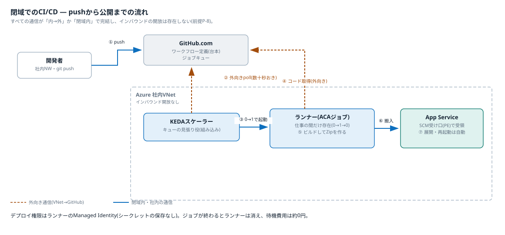
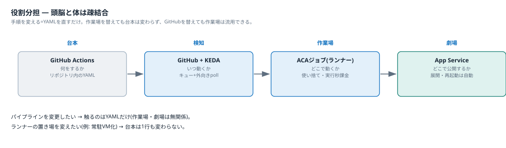

閉域でのCI/CDの考え方
pushから公開までの自動化を、パブリック公開なしの閉域網でどう成立させるかを整理する。
なぜ「普通の自動デプロイ」が使えないか
App Serviceにはデプロイセンター(GitHub連携の自動デプロイ)があるが、その実行役はGitHubのクラウド上のランナーで、パブリックインターネットからApp Serviceのデプロイ受け口(SCMエンドポイント)へ届ける仕組みである。本件では受け口もPrivate Endpointの内側に入るため、パブリックからは届かない。デプロイ時だけ受け口を公開する案(ADR-0001のC3)はP-1に抵触するため除外した。
結論: デプロイの実行役を壁の内側(VNet内)に置く。これがセルフホストランナー(ACAジョブ)の役目である。
原則: 押し込みではなく引き取り
閉域にWebhook(押し込み)は届かない。代わりに、すべての通信を「内→外」の引き取りで組む。
- 見張り役はKEDA — 「仕事の在庫を見て、コンテナの数を0〜nに増減させる自動係」。OSSだがACAに組み込み済みで、設定だけで使える
- KEDAが数十秒おきに外向きHTTPSでGitHubのジョブキューを確認し、仕事がある時だけランナーを起動する。空振りなら起動もしない
- GitHubから閉域内への接続は一度も発生しない。ランナー自身のジョブ受領も外向き接続で行う
全体の流れ

クリックで拡大
- 開発者がpushする。GitHubがワークフローのジョブをGitHub側のキューに積む(この時点で閉域内には何も届かない)
- VNet内のKEDAスケーラーが外向きpollでキューを確認する
- 仕事を見つけたら、ランナーのコンテナを0→1で起動する
- ランナーが外向き接続でコードとジョブ内容を取得する
- コンテナ内でビルドし、成果物をZipに固める
az webapp deployでZipをApp ServiceのSCM受け口へ搬入する。受け口はPrivate DNS→PEの私設IPで解決されるため、VNet内のランナーからだけ届く- App Serviceが展開・再起動する(ここは全自動。ランナーの仕事は「届けたら終わり」)
- ジョブが終わるとランナーは消えて0に戻る。待機中の費用は約0円
デプロイ権限はランナーのManaged IdentityにRBACで与える。GitHubにもコンテナにもシークレットを保存しない — ランナーがAzureの中にいるからこそ使える手で、この構成の隠れた利点である。
役割分担 — 頭脳と体は疎結合

クリックで拡大
| 役割 | 担当 | 例え |
|---|---|---|
| 何をするか(手順書) | GitHub Actionsのワークフロー(リポジトリ内のYAML) | 台本 |
| いつ動くか(検知) | GitHubのキュー+KEDAの外向きpoll | 演出家 |
| どこで動くか(実行環境) | ACAジョブのランナー(使い捨て・実行秒課金) | 呼ばれた時だけ現れる舞台 |
| どこで公開するか | App Service(展開・再起動は自動) | 本番の劇場 |
疎結合の利点: パイプラインの変更はYAMLを直すだけでACA側は無関係。逆にランナーの置き場を変えても(例: 常駐VM化)台本は1行も変わらない。GitHubを別のGitサービスに替えても、作業場の仕組みは流用できる。
なぜランナーの置き場がACAジョブか(代替との比較)
| ACAジョブ | Azure Functions | 常駐VM | AKS | |
|---|---|---|---|---|
| 実行時間の上限 | 実質なし | 従量プランは最大10分。ビルドが収まらない | なし | なし |
| 実行環境 | 任意のコンテナを丸ごと実行 | 関数コード専用。ランナーの同居に不向き | 自由 | 自由 |
| GitHubキュー連携 | KEDAスケーラーが組み込み | なし(自前実装になる) | 常駐エージェント | KEDA(自前運用) |
| 待機中の費用 | 約0円(0にスケール) | 0円だが上記制約で不成立 | VM代が常時発生 | ノード代が常時発生 |
| 保守 | なし | - | OSパッチが復活(本末転倒) | クラスタ運用(過剰) |
エフェメラルなジョブ実行環境としてはACAジョブが最有力。ただし利用者向けアプリの基盤としては別の評価になる(ADR-0001。証明書P-5・Easy Auth・即応答の要件でApp Serviceに軍配)。「アプリはApp Service、裏方ジョブはACA」という適材適所に落ち着く。
運用の注意
- 反映のラグ: pushから起動まで数十秒(ポーリング間隔+コンテナ起動)。デプロイ用途では問題にならないが、即時Webhookの感覚ではない
- 暴走対策は必須: 従量課金はジョブがハングすると課金が続く。ジョブのタイムアウトと同時実行数の上限をテンプレートに必ず入れる(US-06-S2の予算監視とセットで効く)
- 成立条件はP-8のみ: VNet→GitHub.comの外向きHTTPS。確認済み
アプリが増えたときの運用
ランナーは全アプリ共用のため、アプリ数に比例して増える運用はない。押さえる点は3つ。
- アプリ追加時の作業はゼロにする(設計で決まる): ランナーはOrganizationレベルで登録し、組織内の全リポジトリで共用する。アプリ追加時は新リポジトリのワークフローYAMLに
runs-on: self-hostedを書くだけで、KEDA・ACA側の設定は触らない。リポジトリ単位の登録は作業がアプリ数に比例するため採らない - 唯一のチューニングは並列上限: 複数アプリが同時にpushすると、KEDAはランナーを0→nに並列起動する。同時実行の上限を超えた分は順番待ちになるだけで壊れない。デプロイの待ち時間が伸びてきたら上限を上げる。課金は実行秒のため、並列が増えても費用は使った分だけ
- 定常運用はGitHub接続用資格情報の更新だけ: KEDAがキューを確認するにはGitHubへの認証情報(PATまたはGitHub App)が要る。有効期限の管理と更新をRunbookに載せる